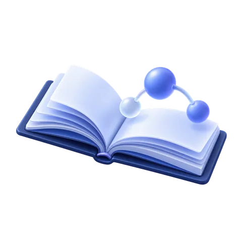

01 / UNDERSTAND

이해하고 범위 정하기
배울 개념의 목적과 데이터 흐름을 파악하고, 무엇을 확인할지 정합니다.
- 공식 문서를 우선 읽고 출처·날짜·버전을 비교하기
- 보호할 대상, 사용자 입력, 권한과 신뢰 경계 표시하기
- 실습할 대상과 허용 범위, 중단·복구 방법 정하기
남길 것
핵심 개념 요약, 간단한 흐름도, 실습 목표와 범위
핵심 개념 요약, 간단한 흐름도, 실습 목표와 범위
관심 있는 분야를 선택하고, 개념부터 실습까지 연결해 보세요.
 00 / COREFoundation공통 기초터미널 · 코드 · 네트워크
00 / COREFoundation공통 기초터미널 · 코드 · 네트워크
 01 / SYSTEMPwn / System시스템 보안메모리 · 디버깅
01 / SYSTEMPwn / System시스템 보안메모리 · 디버깅
 02 / FORENSICForensic디지털 포렌식흔적 · 증거 · 타임라인
02 / FORENSICForensic디지털 포렌식흔적 · 증거 · 타임라인
 03 / MISCMisc문제 해결·자동화단서 · 데이터 · 도구
03 / MISCMisc문제 해결·자동화단서 · 데이터 · 도구
 04 / CLOUDCloud Security클라우드 보안신원 · 구성 · 감사
04 / CLOUDCloud Security클라우드 보안신원 · 구성 · 감사
 05 / NETWORKNetwork Security네트워크 보안망 설계 · 정책 · 탐지
05 / NETWORKNetwork Security네트워크 보안망 설계 · 정책 · 탐지
 06 / CRYPTOCryptography암호학수학 · 무결성 · 키 관리
06 / CRYPTOCryptography암호학수학 · 무결성 · 키 관리
 07 / REVERSEReverse Engineering리버싱분석 · 실행 흐름
07 / REVERSEReverse Engineering리버싱분석 · 실행 흐름
 08 / WEBWeb Hacking웹 보안요청 · 인증 · 취약점
08 / WEBWeb Hacking웹 보안요청 · 인증 · 취약점
어떤 분야를 선택하든 같은 흐름으로 학습합니다. 개념과 위험을 파악하고, 실습으로 확인한 뒤 다른 사람도 재현할 수 있는 결과물로 정리하세요.

배울 개념의 목적과 데이터 흐름을 파악하고, 무엇을 확인할지 정합니다.
허가된 로컬 환경과 샘플 데이터로 동작을 재현하고, 원인과 수정 효과를 확인합니다.
풀이와 코드를 작은 프로젝트로 정리해, 나중에도 같은 과정을 따라 할 수 있게 만듭니다.
완성한 결과물을 관심 직무의 실제 업무·요구 역량과 비교하고, 부족한 개념이나 새로 생긴 질문을 다음 차시와 프로젝트로 연결하세요.